全课逻辑脉络图 点击展开 · 破常识 → 拆基石 → 立核心 → 给证据 → 升维度 → 点题
人际距离与幸福的主观性
连体双胞胎 Laura 与 Reba
课堂从一对特殊的双胞胎开始。Laura 和 Reba Schappel 是连体双胞胎,出生时前额就连在一起,共享部分大脑血管和组织,从出生到现在一直面对面贴着生活。
有趣的是,两人性格迥异:Laura 喜欢乡村音乐,出过一张乡村音乐 CD,是严格的禁酒主义者,不爱聊天;Reba 则热衷社交和派对,睡前要喝点小酒。就像普通双胞胎一样,各有各的特点,相处得也不错。
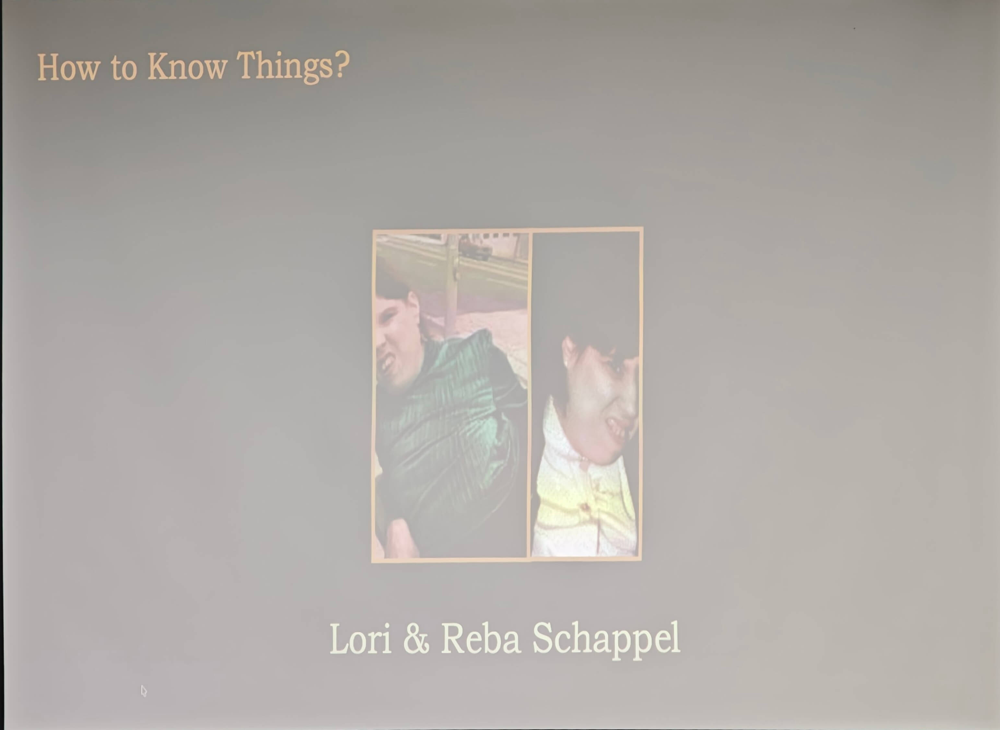
绳子实验:他人即地狱
为了体验连体双胞胎的感受,两位行为艺术家,中国的谢德庆和意大利的莫塔诺,做了一个实验:用一根 2.5 米长的绳子把两人连在一起,不能互相接触,也不能互相离开,保持一年。
一个人上洗手间,另一个人必须在旁边等着;一个人去看电影,另一个人也必须跟着去。开始时两人觉得好玩,通过对方能了解更大的世界。但没过多久,这成了"有史以来最糟糕的行为实验":他们开始恨对方,每天计算实验什么时候结束,甚至计算对方什么时候死掉。绳子解开的一刹那,两人发誓再也不见对方一眼,再见到就会忍不住杀死对方。
他人即地狱。叔本华
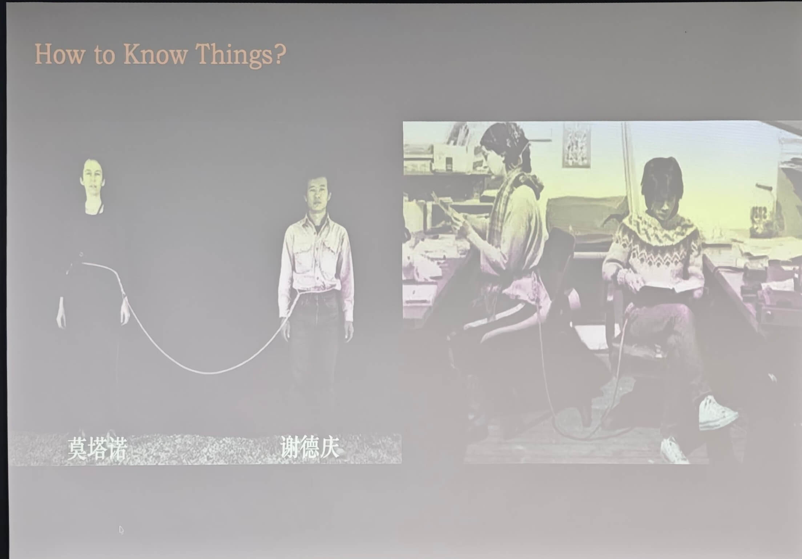
豪猪困境:健康关系需要距离
叔本华还有一个更精妙的比喻,叫豪猪困境:天冷了,两只豪猪要抱在一起取暖;靠得太近,刺会刺痛对方,于是散开;离得太远又冷,于是又靠近。在不停地刺痛与回避中,它们找到了一个平衡。
恋人关系一旦有了"绳子",一切都会翻天覆地:亲密时没有身体可以安慰(都长满了刺),冲突时没有退步空间(绳子拴着)。没有真正的距离,就没有真正的靠近;没有离开的可能,留下也就不再是爱或承诺。这个状态是什么?是婚姻的状态。这就是为什么有人说"婚姻是恋爱的坟墓"。
绳子尚且还有 2.5 米的距离,连体双胞胎比这更极端:脸贴着脸,贴一辈子;一个人死掉,另一个人也不得不死掉,因为大脑连在一起,共享血管。只有死亡才能真正解开这根"绳子"。
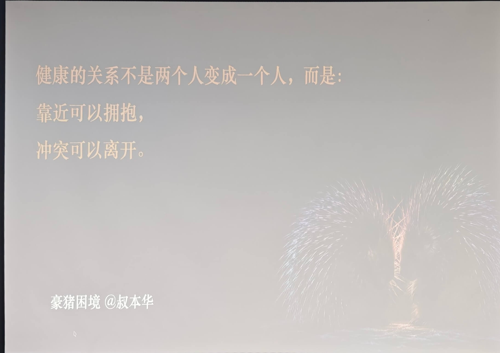
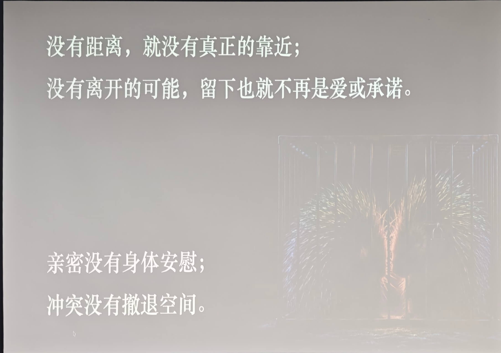
分离手术的伦理困境
如果你是父母或医生,看到一对连体婴儿出生,第一反应一定是:能不能分开,让他们成为两个独立的个体?即使手术有风险,可能一个孩子甚至两个孩子都会死掉。因为在我们的共识里,和"连在一起"相比,死亡都可以接受。
但 Laura 和 Reba 的回答是:
我们不愿意,绝不。为什么你们希望我们做分离手术?这不仅要花很多钱,而且还会毁掉我们现在幸福的生活。Reba Schappel, 1997
你可以说她俩"脑袋进水了",毕竟前额叶连在一起。但医学历史学家 Alice Dreger 采访了她能接触到的所有连体双胞胎,发现了一个惊人的一致:
对于连体双生子来说,不愿意通过分离手术而变成两个独立的个体,是他们普遍的看法。迄今为止,我还未发现一例主动寻求分离的连体双生子。医学历史学家 Alice Dreger, 1998
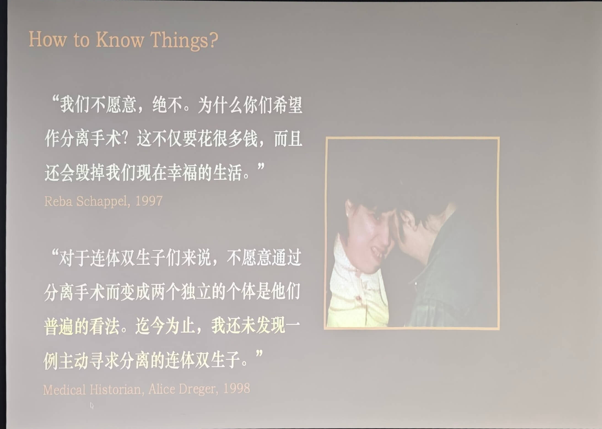
也许那种连在一起的幸福,是我们这些"单个体"的人永远无法体验的。反过来推:如果谢德庆和莫塔诺被绳子绑十年、二十年,他们也许会觉得那是人生最美好的经历,就像一对男女被强行绑在一起过了五六十年后,觉得"这就是我想要的婚姻"。
什么定义了幸福
分离连体双生子不只是医学问题、伦理问题,更是心理问题:什么定义了幸福?难道"两个独立的个体"就是幸福的定义吗?幸福有没有外在的客观标准?
幸福也许纯粹是一种主观感受。也许 Laura 和 Reba 其实痛苦万分,只是对外强装欢笑。人心到底是什么,远超我们每个人的想象。
与理解别人行为的难度相比,理解宇宙的奥秘竟是如此的容易。普鲁斯特《追忆似水年华》
刘嘉老师正是因此选择心理学:高中时他是数理化竞赛生,偶像是爱因斯坦,本想读天体物理。但读了弗洛伊德之后,他觉得相比之下,宇宙苍白得像一张纸,人心才是最有趣的。
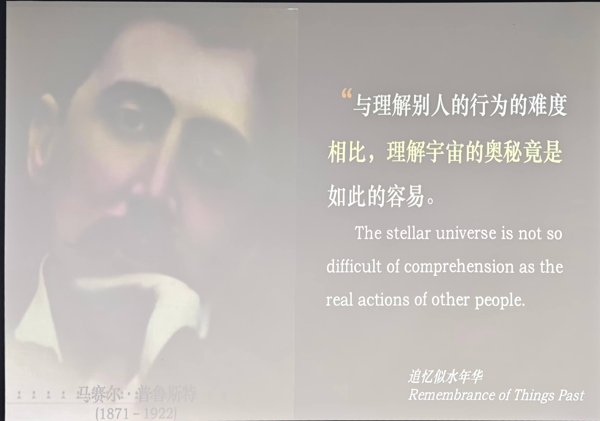
经验主义:现代科学唯一的方法论
心理学的乱象
正因为人心复杂,心理学至今还只能算一门"准科学"。这个学科里江湖骗子最多:没人敢挑战数学家的公式,因为看不懂;但谁都敢对心理学指手画脚。
国内某知名大学最近开设了"东方心理学"方向,试图把佛教、道教、儒学三合一,不仅免学费,还倒贴两万元奖学金。这就是当下的乱象:一方面人们对内心充满好奇,另一方面骗子四处横行。这门课讲的,是有根有据的科学心理学。而科学的起点是:怎么去理解和观察这个世界。如果输入是错的,认知和输出就全是错的。
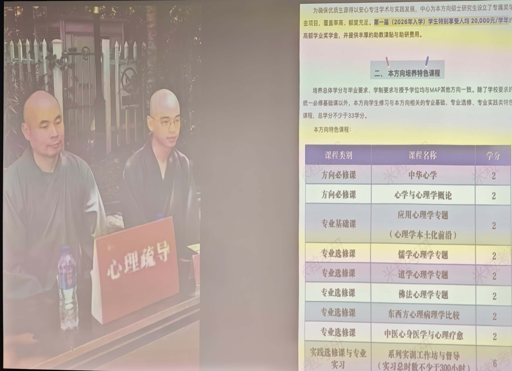
穿越天穹的旅行者
中世纪一位天文学家书中有一幅著名版画:一个人身体在旧世界里,头撑破天穹,探进新世界。这幅画的官方名字叫《宇宙旅行者》,也叫《穿越天穹》。它表面毫无科学逻辑,表达的是人类对外部世界最原始的好奇:从智慧降临的那一刻起,我们就在不停地观察这个世界,想知道宇宙如何运行、生命从何而来。
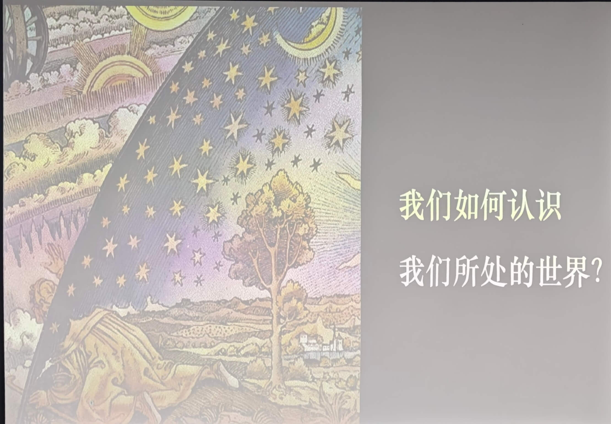
古希腊的两派医生
古希腊有两个医学流派:
- 教条主义(dogmatic):先有理论,再按理论治病。"你发烧是因为五行缺土,回去吃点土。"
- 经验主义(empiricism):不知道原因,但这种症状以前见过,当时吃这个药好了,你也试试。
如果你发烧了,选哪个?你的祖先选了第二种,因为选第一种的病人大概都死掉了。
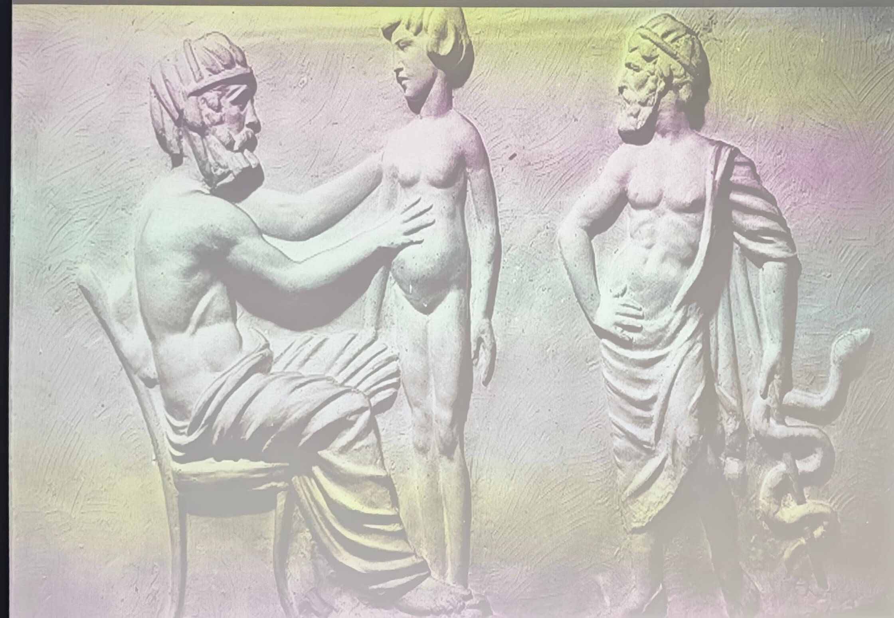
经验主义的三大要素
经验主义成了现代科学的唯一方法论,原因有三:
- 数据高于权威。亚里士多德说重物比轻物落得快,因为他是圣人、有强大理论体系,这话就"对"了上千年。伽利略不信邪,在比萨斜塔同时扔下铅球和木球:同时落地。观察优于理论。
- 理论必须可证伪。爱因斯坦的广义相对论是"拍脑袋"拍出来的,没有任何实验数据。但它做出了大胆预测:光经过大质量物体时会弯曲,日食时能看到太阳背后被遮挡的星星。一个优美的理论必须经得起事实的验证,否则只是小说和幻想。
- 可观察、可重复。一个人发现了伟大学问却不分享数据和方法,那就只是个人思想。只有别人能沿着你的方法完全重复出结果,才会成为共识,成为真正的知识。
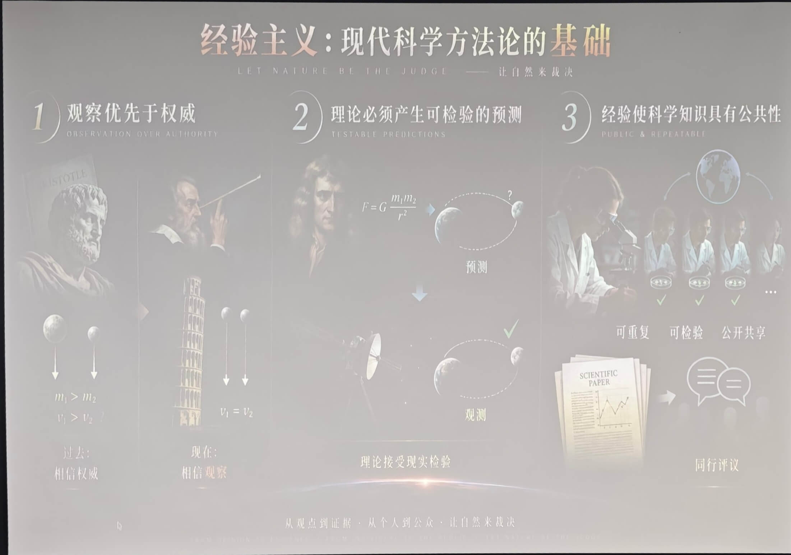
眼见未必为实
科学方法对研究物理世界行之有效,那能不能原样搬进心理世界?不行。物理世界的观察法则,在心理世界里不成立。
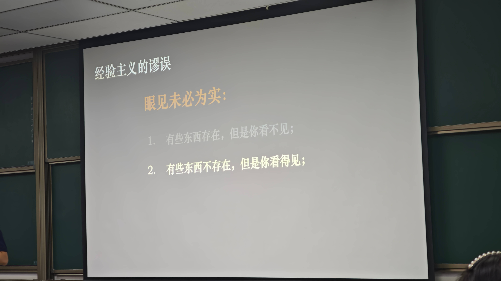
看不见的存在:变化盲视
课堂实验:两张图片来回切换,图中有一个很大的东西在消失和出现。第一次演示,大半教室的人看不见:消失的是飞机翅膀下面的一台发动机。第二次演示(栏杆高低变化)给大家恢复信心;第三次(船上的箱子)又有很多人卡住;第四次(衣服颜色)女同学先看见,看来"女同学对衣服更在意"。
这叫变化盲视(change blindness):变化的东西,你看不见。
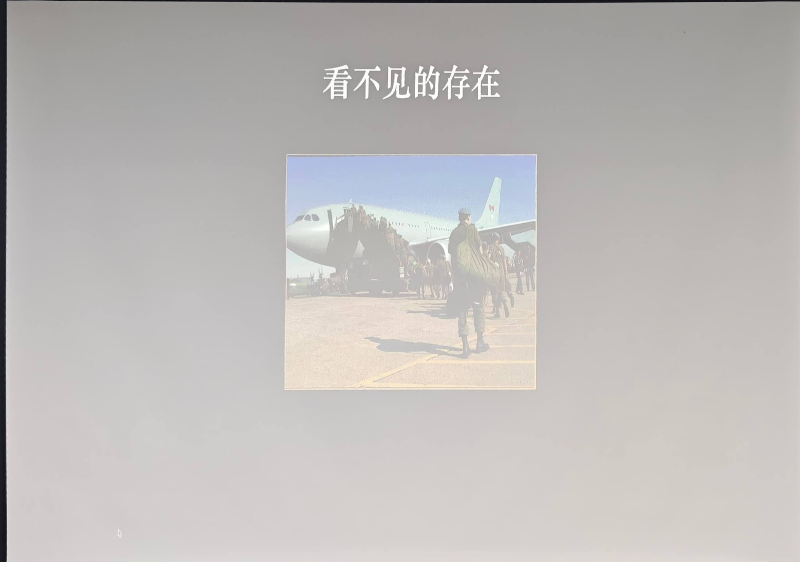
扑克牌魔术:你什么都没看到
接着是一段扑克牌魔术视频:魔术师让 Sarah 选一张牌。看完之后问:有什么变了?牌背的图案变了、魔术师的衣服变了、桌布变了、背景布变了、扑克牌的颜色变了。还有什么东西没变?全变了,就在你眼前,但你什么都没看到。
你觉得你看到了很多东西,其实你基本上什么都没看到。如果这是凶杀案现场,你说"我看见了一切、句句属实",但你可能真的什么都没看到。
看得见的不存在:视错觉
有人会说:多做几遍实验不就行了?如果心理学这么简单,那只是我们不够勤奋。但还有一个更奇怪的问题:有些东西不存在,你却看得见。
- 赫尔曼网格:小黑点在格子之间跑来跑去,你盯住它,它就消失。小黑点根本不存在。
- 紫绿圆点(似动错觉):盯住屏幕中央的十字不眨眼,会看到三个现象:紫色的圆点开始"转动"(其实只是依次出现消失,并没有运动);转动的圆点变成了绿色(物理世界只有紫色圆,绿色不存在);最后所有紫色圆消失,只剩一个孤零零的绿色圆在转。一眨眼,一切又回来了。
运动不存在,你看得见;绿色不存在,你看得见。
被扭曲的真实:对比错觉
最扎心的是第三类:既存在、你也看得见的东西,依然是被扭曲的。
- 艾宾浩斯错觉:两个一样大的红圆,被不同大小的圆环绕后,看起来一大一小。
- 灰度对比错觉:同一块灰色,放在深底上显得浅,放在浅底上显得深。把图分开,你会觉得两块颜色完全不一样;放回去,它们就是同一块灰。甚至能看出"立体感",仿佛一块延伸过来盖着浅玻璃,另一块盖着深玻璃。
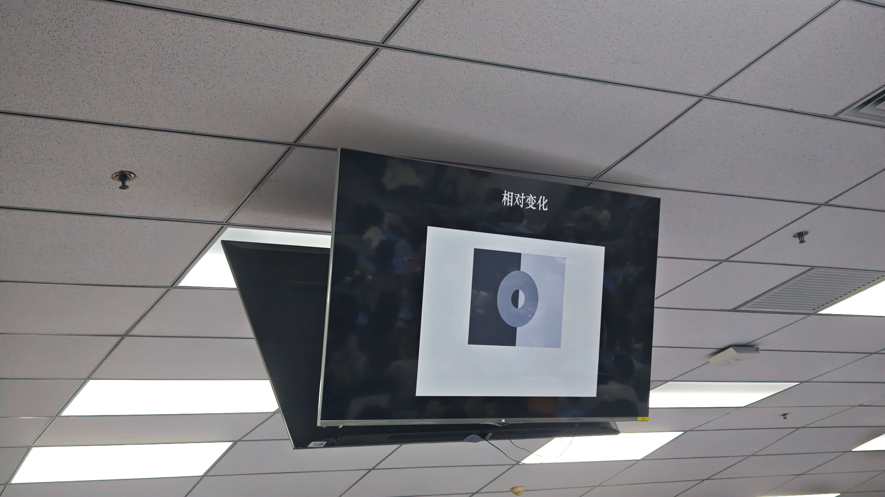
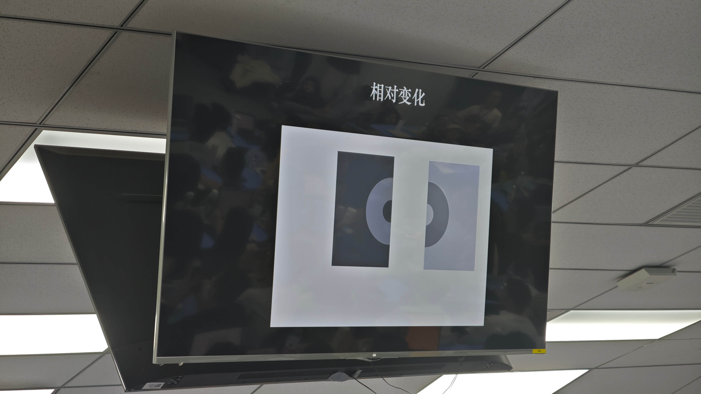
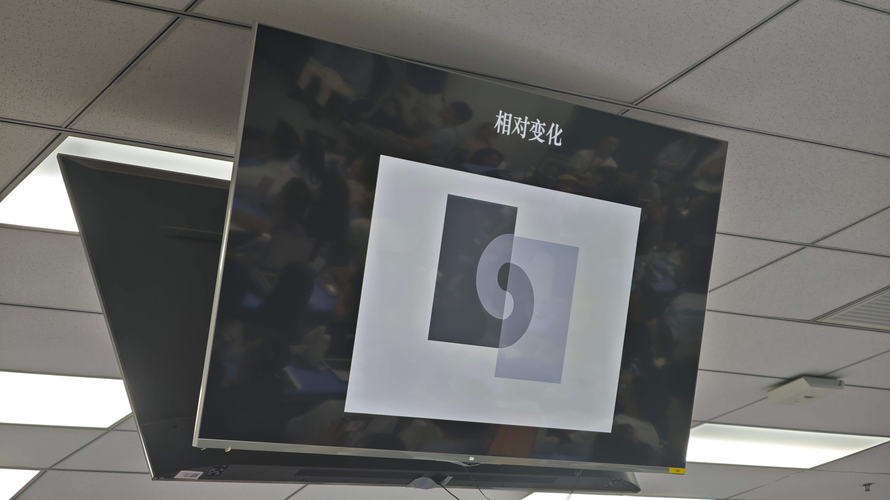
如果科学的目的是让我们在自己曾非常了解的事物面前感到笨拙和无知,那么即使你是清华的学生,也再没有比心理学更成功地完成这项使命的学科了。哈佛心理学家 Daniel Gilbert,课堂转述
空间:心智构建的三维世界
什么是心智
John Stuart Mill 的定义:心理学是关于心智的基础法则的科学(The science of the elementary laws of the mind)。一提 mind 大家就来劲,因为人工智能的终极目标就是 simulate 人类的心灵。唐杰老师说要用剩下的 30 年研究意识的本质:这才是搞 AI 的原动力,不是造一台跑得快的机器,而是通过 AI 理解人的心智。
但问题是:心智本身没有定义。怎么证明你"有心智"?康德的思路很妙:定义不了心智,就定义心智的基石。有三样东西是先验的(独立于经验、生下来就有):空间、时间、因果。把这三块基石研究清楚,心智就升上去了。
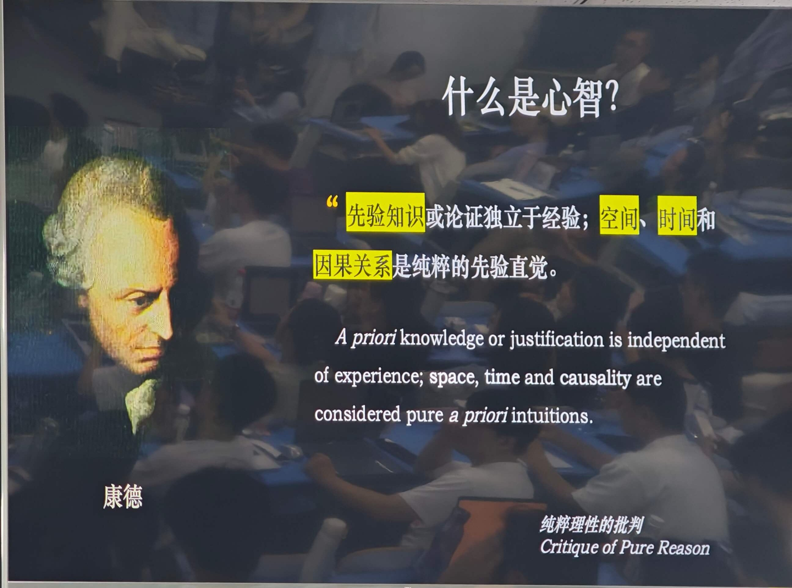
柏拉图的洞穴
先看空间。柏拉图在《理想国》里描述了洞穴人:一群人从出生就被锁在石墙后,头不能转动,只能直盯前面的岩壁。身后有人举着马、猿、鸟的形状走过,一束光打过来,岩壁上就出现剪影。这些人一辈子看到的都是二维投影,于是认为马就是平面的马、鸟就是平面的鸟,整个世界是扁平的。
有一天,一个人挣脱锁链爬出洞穴,看到了花花绿绿的真实世界:太阳、绿草、高山、河流。他返回洞穴告诉大家:你们看到的全是虚假的,跟我出去看真实的世界。
柏拉图想说的是:我们的认知被束缚着,我们以为的真相只是真实世界的投影。要做的是逃出洞穴。那幅《穿越天穹》正是同一意象:身体在旧世界,头探出去看新世界。
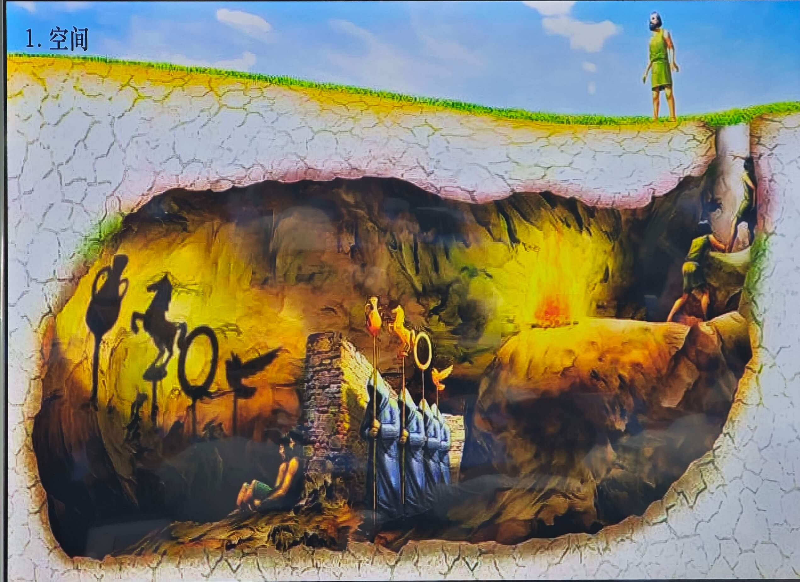
问题是:爬出洞穴的人看到的就真实吗
- 庞佐错觉(红线):两条一样长的红线,画上透视箭头后,你觉得"后面"那条更长。因为你觉得它离你远,而视网膜上的投影一样长,所以"远处的一定更长"。
- 艾姆斯房间(Ames room):两个小孩,一个像巨人,一个像侏儒;让他们交换位置,你会眼睁睁看着他们"长大"和"缩小"。
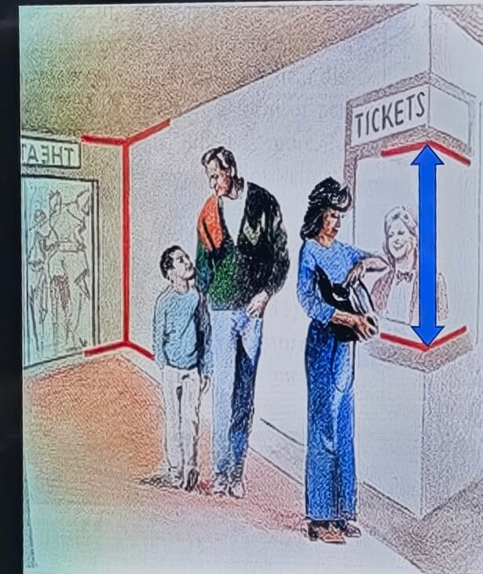
关键洞察:柏拉图洞穴里的人被钉在石壁前,看墙壁上的二维投影;而我们没有被钉住,但外面的世界同样是被投影到视网膜上的,视网膜是二维的,和墙壁没有区别。你说"我有两只眼睛"?闭上一只,世界变平了吗?没有。
我们每个人都是洞穴人,看到的是投影,却以为世界是立体的。
时间:只有"现在"才是真实的
两个世界的时间
物理世界:时间从大爆炸开始单向往前走。过去是真实的(一直追溯到大爆炸),未来是真实的(一直到宇宙热寂)。虚假的是"现在",它是一个无穷小的点。你写公式里的 t 只是为了方便;想把"现在"放宽一点,就必然有一部分属于过去、一部分属于未来。物理世界里没有"现在"。
心理世界:"现在"是真实的,它是一点点对过去的回忆加上一点点对未来的预期,大约两分钟宽度的余量。而过去是虚假的,未来也是虚假的。
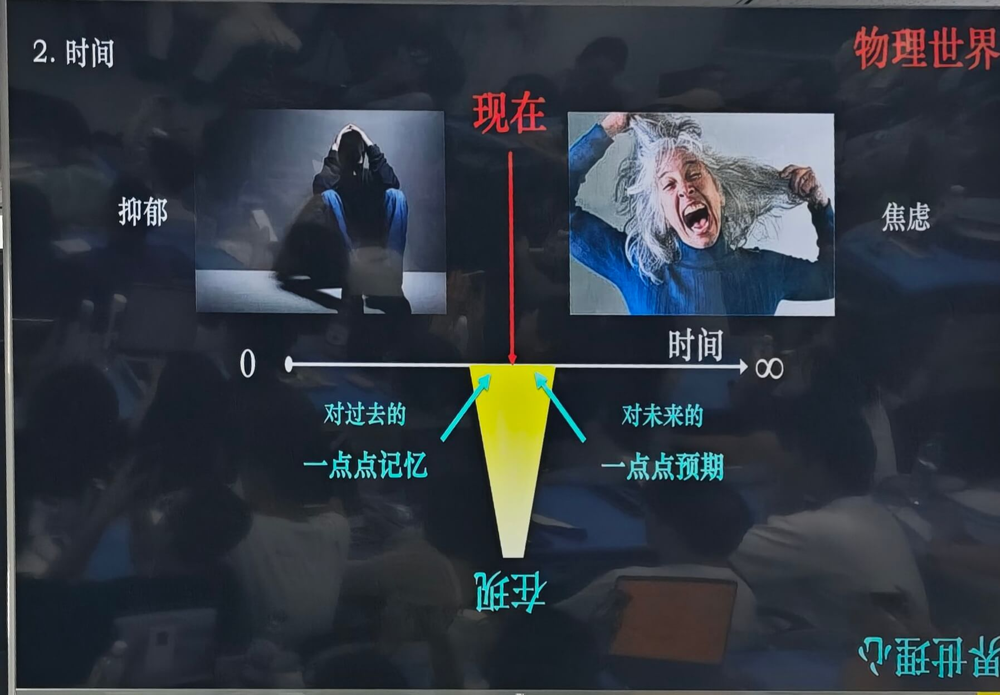
抑郁与焦虑的时间本质
由此得到一个干净利落的定义:
- 抑郁 = 身在当下,心在过去。"当时走路小心一点,那一万块钱就不会丢了。"你认为过去发生的一切都是真的,过去的一切影响着现在。
- 焦虑 = 身在当下,心在未来。"等一下回去要挤地铁怎么办?难道要骑 10 公里小黄车?"你在为尚未发生的事情担忧。
如果你真正认识到这一点,你绝不会焦虑,也绝不会抑郁。"活在当下"已经变成了鸡汤,但没人告诉你为什么。原因很简单:过去隐藏着不堪回首,未来充满未知,只有当下才是可以触碰的真实。
枯井里的蜜糖
《维摩诘经·是身如丘井》里的故事:一个人得罪了皇帝,皇帝派大象追杀他。他狂奔到荒野,眼看要被踩成肉酱,发现一口枯井,不顾一切跳进去。井底却有一条喷火的恶龙,张着血盆大口等他。下坠途中,他抓住岩壁上的一根树枝,悬在半空,暂时安全。
这时来了两只老鼠,一只黑、一只白,轮流啃那根树枝,眼看就要啃断。就在一切都要完的时候,他发现树枝尖上有一滴蜜糖,于是他忘记身后的大象、脚下的恶龙,不顾一切去吮吸那滴蜜。
这就是我们的人生:
- 大象是不堪回首的过去:这事失败了,那事干砸了。
- 恶龙是充满未知的未来:读了书未必找到工作,没被解雇之后又怎么办。
- 黑白两只老鼠是白天和黑夜,轮流啃你的树枝,让你此刻不得安宁。
如果你焦虑大象会踩死你、担心恶龙会吃掉你、盘算老鼠再过几分钟啃断树枝,你这辈子就在惊慌失措中度过。你要做的是:不放过眼前那滴蜜糖,尽情享受此刻的甘甜。恶龙是你想象出来的,大象是你扭曲出来的,而那滴蜜糖才是唯一的现实。
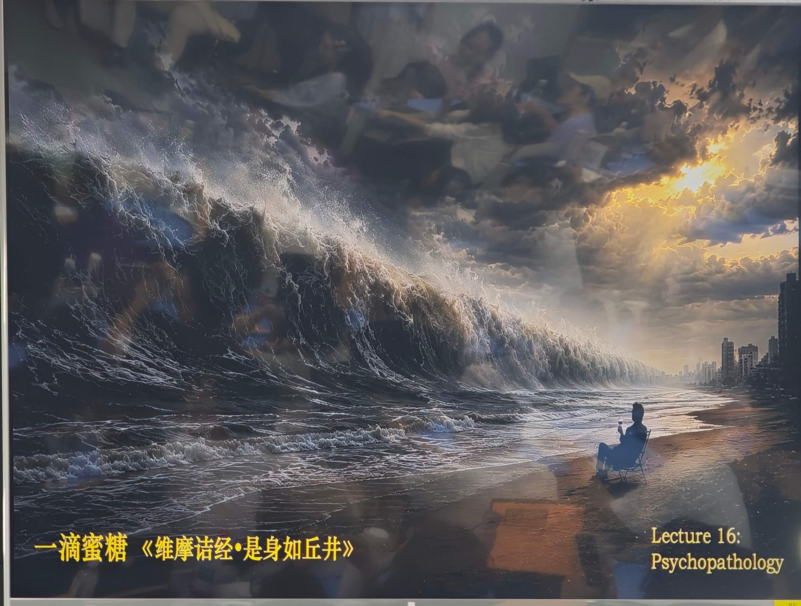
时间,和空间一样,是我们构建出来的。
因果:把沉默的宇宙变成可以询问的人
德谟克利特:最大的野心是理解世界
因果出问题,比时间和空间更严重。德谟克利特是古希腊哲学家,家里很有钱,但他对钱不感兴趣,四处流浪,每天跟人讨论哲学。分家产时他回去说"我不要,我只想当哲学家",兄弟姐妹觉得这人有病,把他告上法庭。
我宁可找到一个因果的解释,也不愿成为波斯人的王。德谟克利特
波斯王拥有财富、美女、广袤的土地,是所有人的梦想。但德谟克利特说这些我都不要:苹果从树上掉下来是现象,我更想知道为什么苹果会掉下来。理解这个世界的法则,比拥有这个世界更有价值。
这也回答了"为什么在大学当老师是一件无比幸福的事":虽然穷,但可以把所有时间用来理解世界。拥有的东西今天有明天可能就没了,而你理解的东西永远是你的。
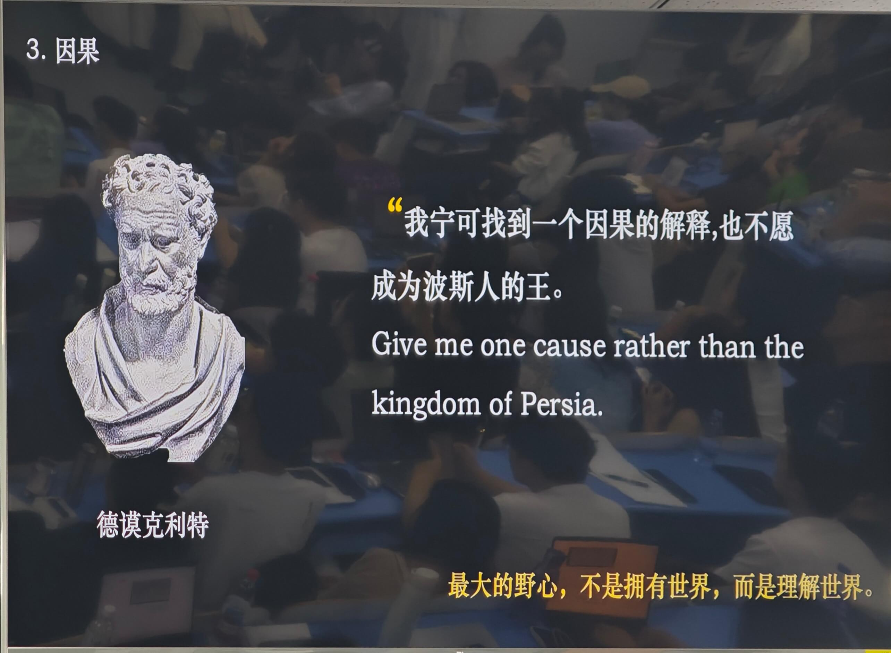
泛模式化:火星上的人脸
人有一个神奇的特点:看到随机的东西,总认为它不是随机的,背后一定有模式(pattern)。这叫泛模式化(patternicity)。
最著名的是"火星人脸":望远镜不够好时,人们发现火星上有一张巨大的人脸,于是各种说法四起,外星人的基地,否则没必要修张人脸。后来望远镜清楚了:啥都不是,就是个土丘。但科幻小说已经写了一堆。
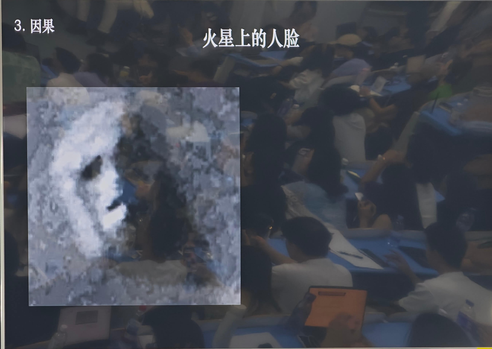
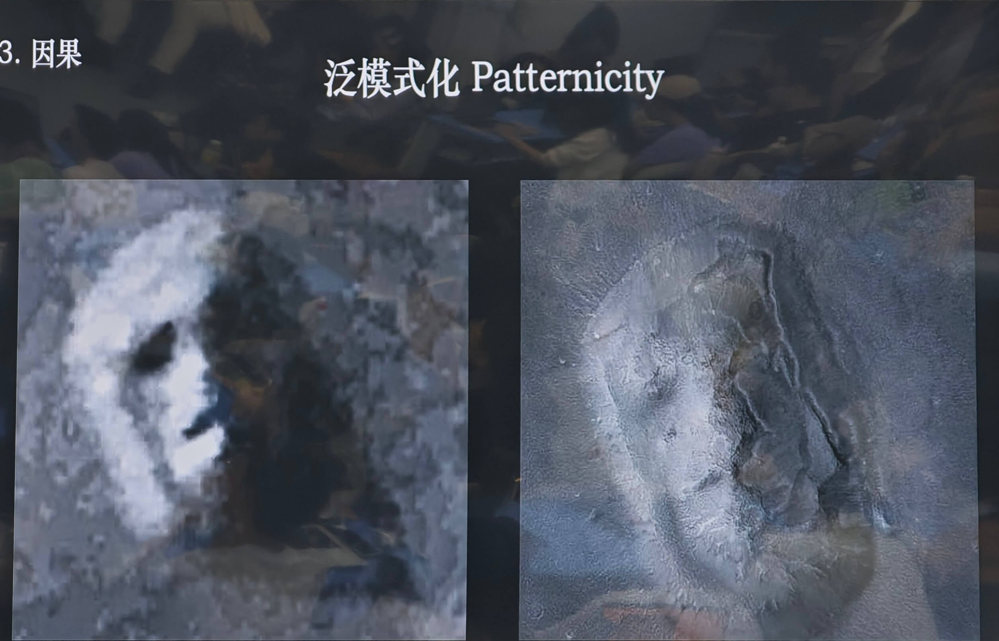
泛模式化最明显的表现是:神的存在。从来没有人能拿出确凿证据说见过神,但全世界约 78.52% 的人(约 50 亿)相信神存在,还有 15% 觉得"也许有也许没有",斩钉截铁说不存在的不到 5%。我们关心的不是现象,而是为什么。
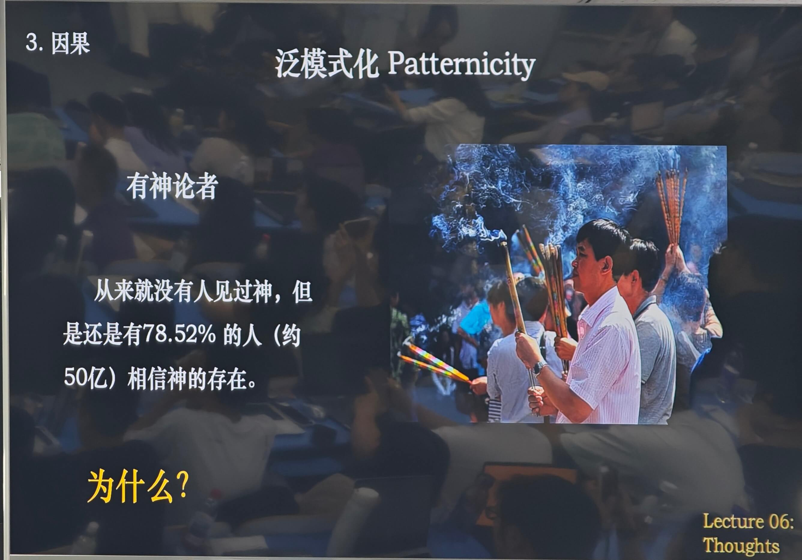
为什么需要神:因果压缩
第一,万事万物皆为目的。问小朋友最好玩的特点就是:万物皆有目的。山为什么存在?人为什么会死?这事为什么发生在我身上?一旦相信万物有目的,就得有人来设定这个目的,那一定是神,一个比人更厉害的东西。
第二,世界太复杂,大脑装不下。古代人不懂雷电,现在我们学了物理知道大概。但为什么你仰慕的女神离你而去?为什么一块板砖砸断你的腿?为什么高考差 1 分来了清华而不是北大?这些事你解释不清楚,大脑就充满混乱。
神提供了一个极强的因果压缩:雷电、婚姻、恋情、运气、成功,一个词全解决,"神的旨意"。你不用去翻麦克斯韦方程组,也不用研究运气里的玄学。
再问一个问题:有多少人相信"正义也许会迟到,但绝不会缺席"?如果你信,说明你本质上相信神的存在,你相信有一个东西会来惩罚邪恶,善有善报、恶有恶报。这句话的原话其实恰恰相反:迟来的正义即非正义(Justice delayed is justice denied),正义要当场到来,晚了就不是正义。
我们为什么还是要信?因为我们从小被教育:哭了,妈妈就会来;努力了,成绩就会好;奋斗了,就一定会成功。我们相信世界上存在因果。
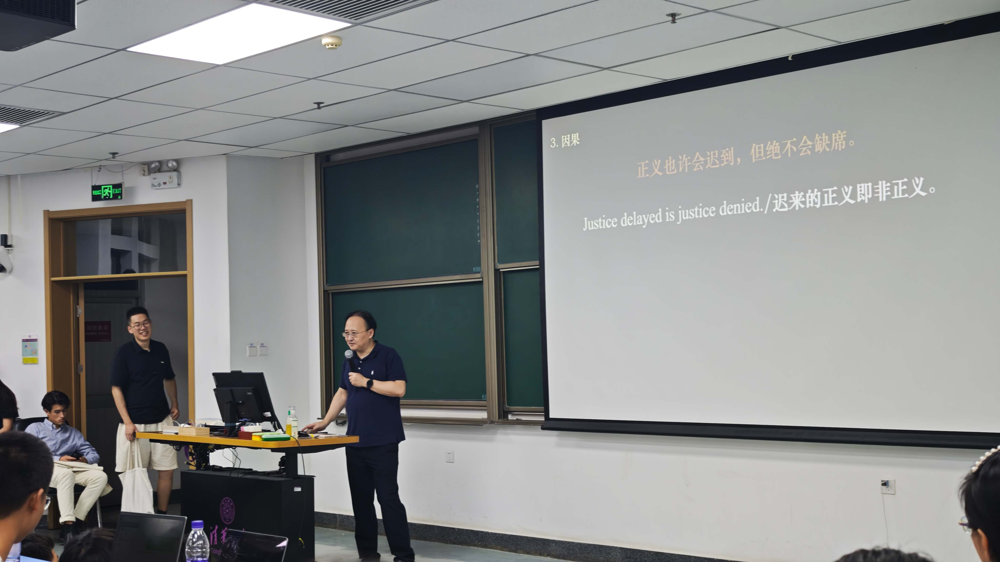
更深层次的原因是:人真正难以忍受的,未必是没有结果、没有答案,而是苦难没有观众,人生没有目的,正义不会实现。你一个人在受苦,周围的人都觉得你过得挺好;你拼尽全力,照样考得很差。这个世界冷冰冰的,没有温度也没有目的,在随机中运行。努力得不到回应,是多么痛苦的事。
神的概念,把一个沉默的宇宙转化成了一个可以被询问的主体。
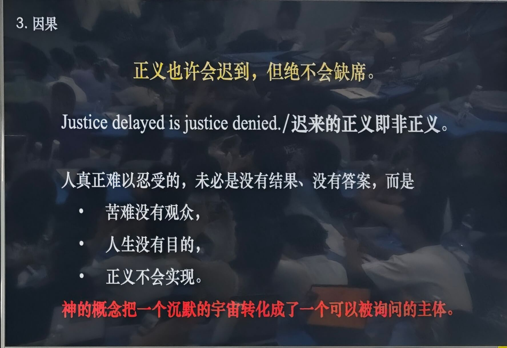
三大基石全是构建的
回到康德:空间、时间、因果,三大基石全部是我们构建出来的,不是物理世界的客观存在。基石都是心理世界构建的,那么建立在其上的心智本身,也必然是我们构建的。它不是对物理世界真实客观的反映,而是与物理世界有关联、但独立于物理世界的东西。
这就是心理学发展慢的原因:我们把心理当成物体来研究,忽略了它的主观性和每个人的独特性,所以很多结果是错的。
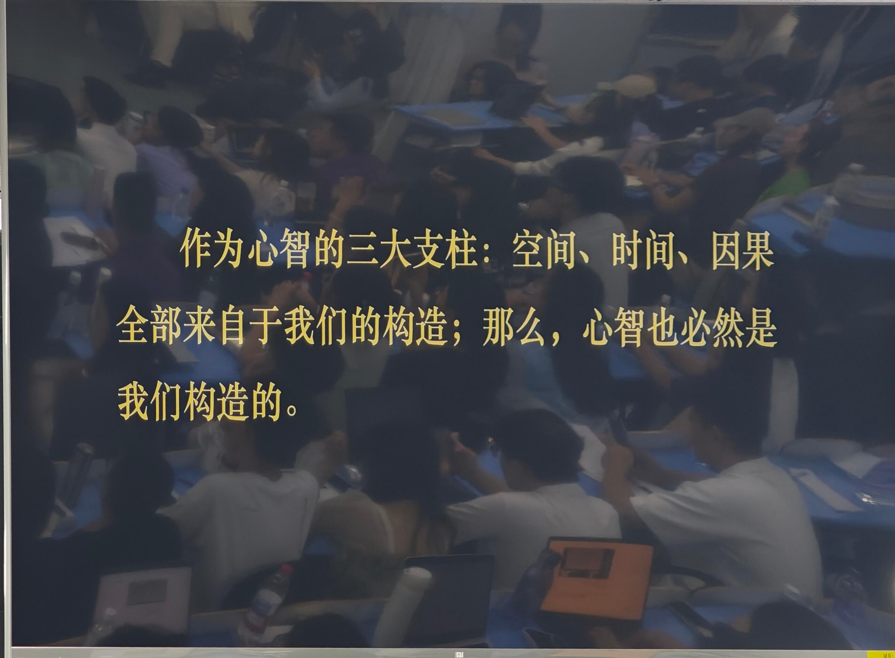
两个世界:原子与故事
埃舍尔的昼与夜
用埃舍尔的两可图形《昼与夜》来表示两个世界:鸟从白天飞出黑夜,又从黑夜飞入白天。一边是物理世界,一边是心理世界,是同一个事物的两面。
每个人都有两个世界:
- 物理世界:大家共享,客观存在,不以你的意志为转移。有人富裕有人贫穷,有人帅有人丑。
- 心理世界:你独有,任何人都无法侵占,由你自己耕耘、照料、构建,是你的私产。
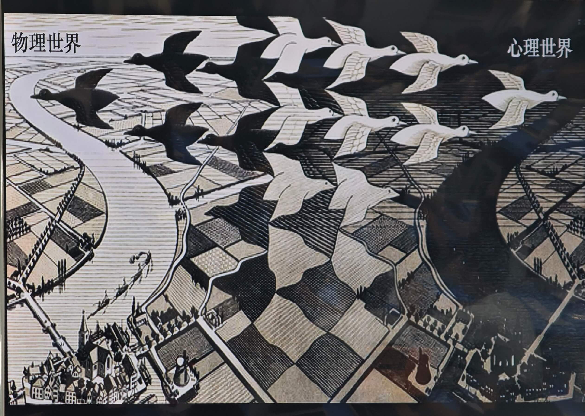
可悲的是,我们花太多时间在共享的物理世界里争抢,挣更多钱、当董事长、让人尊敬,却完全忽略了自己独有的心理世界,任它长草。很多事业极其成功的人痛苦不堪。有位身家几十亿的老总,身边配一位"仁波切"专门递毛巾端水,下属必须保持一米距离。物理世界经营得很好,但它随时可能灰飞烟灭;精神世界却彻底荒芜。这是人不快乐的根本:你拥有的东西不去照料,你控制不了的东西反而拼命去抓。
费曼之问:心理世界的"原子"是什么
费曼在《费曼物理学讲义》前言里写道:如果世界遭遇大灾难,只能给人类后裔留一句话,他会留"世界是由原子组成的"。因为复杂来源于简单,知道原子怎么运动,就能重建全部物理学。
那么心理世界的"原子"是什么?不是原子,也不是神经环路。答案是穆列尔·鲁凯泽那句话:
宇宙是由故事而非由原子构成的。穆列尔·鲁凯泽,诗人
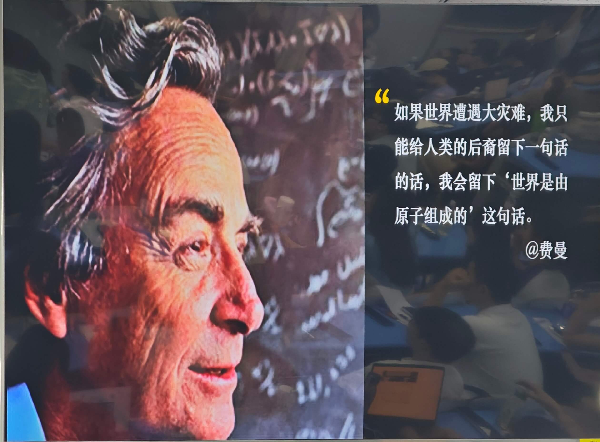
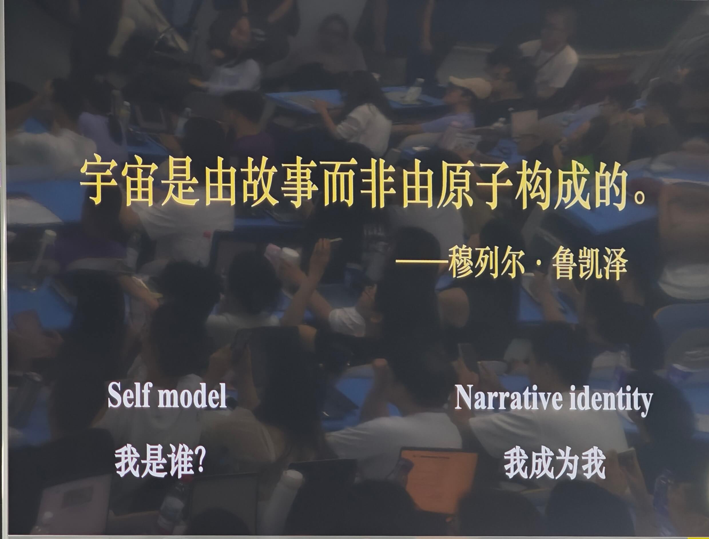
为什么?因为心理世界有一个自我模型(self model)。天上下一场暴雨:赶路的人骂"该死的雨",还有 10 公里就到家了,路被冲垮;久旱五个月的农民却说这场雨太及时了,秧苗有救了,千万别停。同样一场雨,在物理世界是一样的,在心理世界是两个完全不同的故事。
正是这些"原子"经过心理加工变成故事,决定了你究竟是谁。一块石头只是原子的堆砌,毫无意义;但如果它从你家乡带来,漂洋过海陪了你 30 年,它就是无价之宝,它代表着对故乡的思念、对家人的怀念。
故事定义了我们是谁
故事不仅定义事实,还让我们成为自己。初中一场考试失败,当时带来巨大的痛苦;但当你现在坐在清华的教室里回想,正是那件事激发了斗志、改变了人生轨道,"我今天要感谢它"。同一件事,在人生不同阶段会有不同的理解,而这些理解构成了你人生的叙事认同(narrative identity)。
你的故事未必是我的故事。父母说"你应该干这个干那个",你可以告诉他们:这是你的故事,不是我的。每个人的故事,只有靠自己的行动才能写出来。原子一成不变,铁原子放一百万年还是铁原子;但它投射到不同人身上、被不同人携带时,故事就完全不同。
贫穷、自尊与心理资本
皮格马利翁效应:心想事成?
皮格马利翁是塞浦路斯的雕塑家,得到一块上好的象牙,按心中女神的样子雕刻出来,然后不可控制地爱上了自己的作品。他每天向女神祷告:把她变成活人吧,我要娶她。祷告了一天、一周、一个月、一年、十几年,女神终于被打动,象牙少女变成了真正的女性。
这就是"心想事成"。你会说这太不靠谱,但它引出一个真实的研究领域:信念与期待如何塑造现实。而从这里,课堂转向一个沉重的真实话题:贫穷。
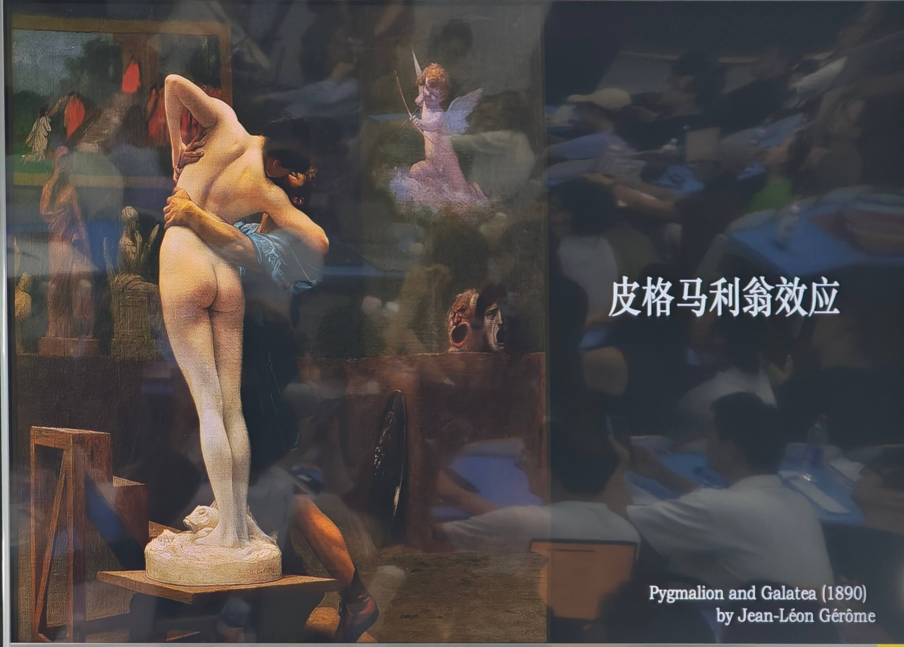
驳"挫折有益论":贫穷从来不是礼物
高中作文里你一定用过孟子:"故天将降大任于是人也,必先苦其心志,劳其筋骨……"这是标准鸡汤。事实是:
贫穷从来不是美好的。贫穷带来的是低下的幸福感、受损的认知发展和阶层固化:你穷,你的小孩大概率也穷。贫穷不仅限制我们的想象力,更糟糕的是,它损伤了我们的想象力。
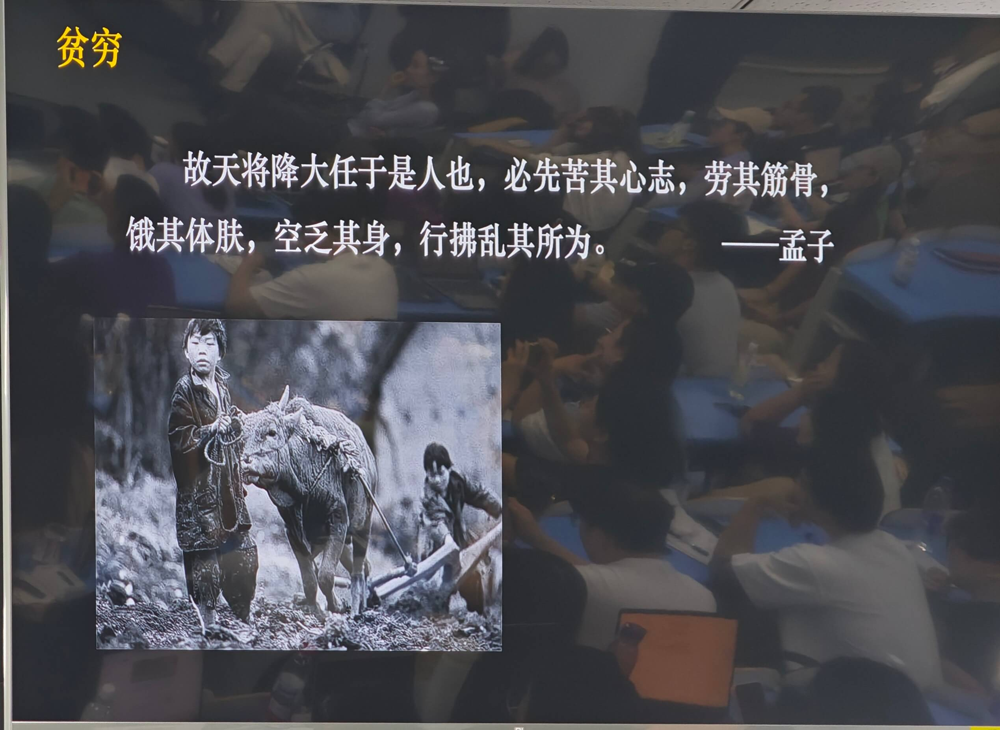
脑科学实验:两只基因完全相同的小鼠,一只养在"穷"环境(只有吃食和水,一个小房子),一只养在"富"环境(有运动场所、有同伴)。结果"穷"小鼠的神经元像枯死的树枝,几乎没什么突触;"富"小鼠的神经元枝繁叶茂。突触数量决定了神经计算的复杂度。
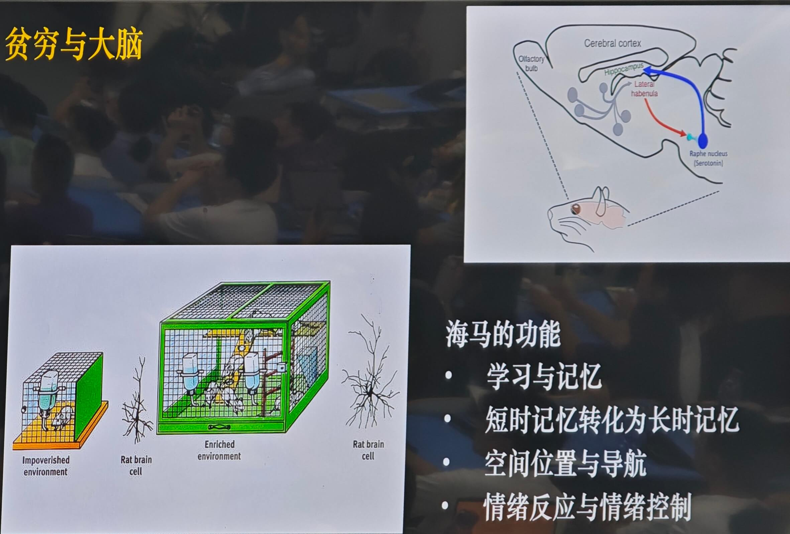
受影响最大的是海马体,学习与记忆的中枢,负责把短时记忆转为长时记忆,还管空间导航和情绪控制。贫困环境长大的小鼠,海马体明显萎缩。认知功能受损,这是神经科学的数据,不是比例问题。
刘嘉在北师大时重复了这个实验:招本科生做功能磁共振,测量海马体积,把来自贫穷家庭和富裕家庭的孩子分成两类。同样是通过高考考上本科的学生,富裕家庭孩子的海马体积显著大于贫穷家庭孩子。人类数据只是重复了小鼠的结果。
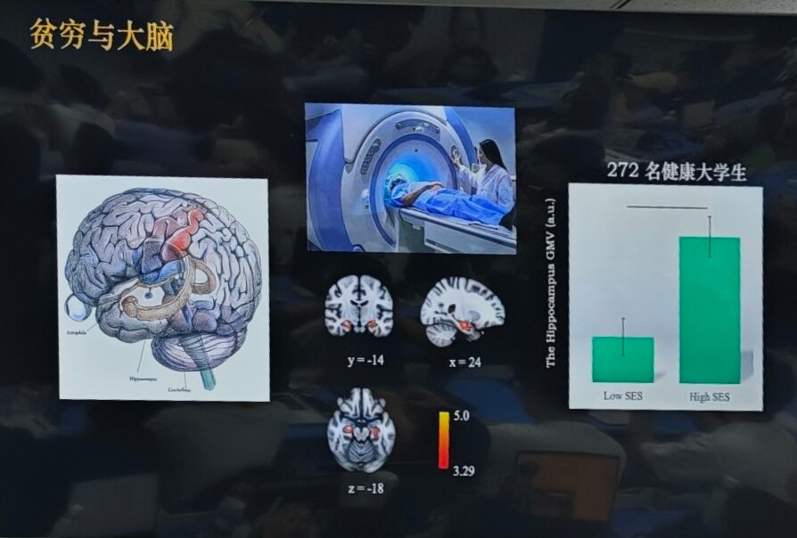
贫穷是产生挫折和应激的主要压力源:经济压力、学业压力、交往压力、世俗观念压力,导致焦虑、自卑、闭锁、抑郁。孟子那一套,信了你就永远成不了大事。
不花钱的解药:自尊
怎么打破阶层固化?回到小鼠实验:让环境更丰富、给它们找同伴、让它们锻炼、给它们"三室一厅"加安全屋。一切都有效,但都需要钱。而财富总是有限且集中在少数人手里。有没有不花钱的方法?
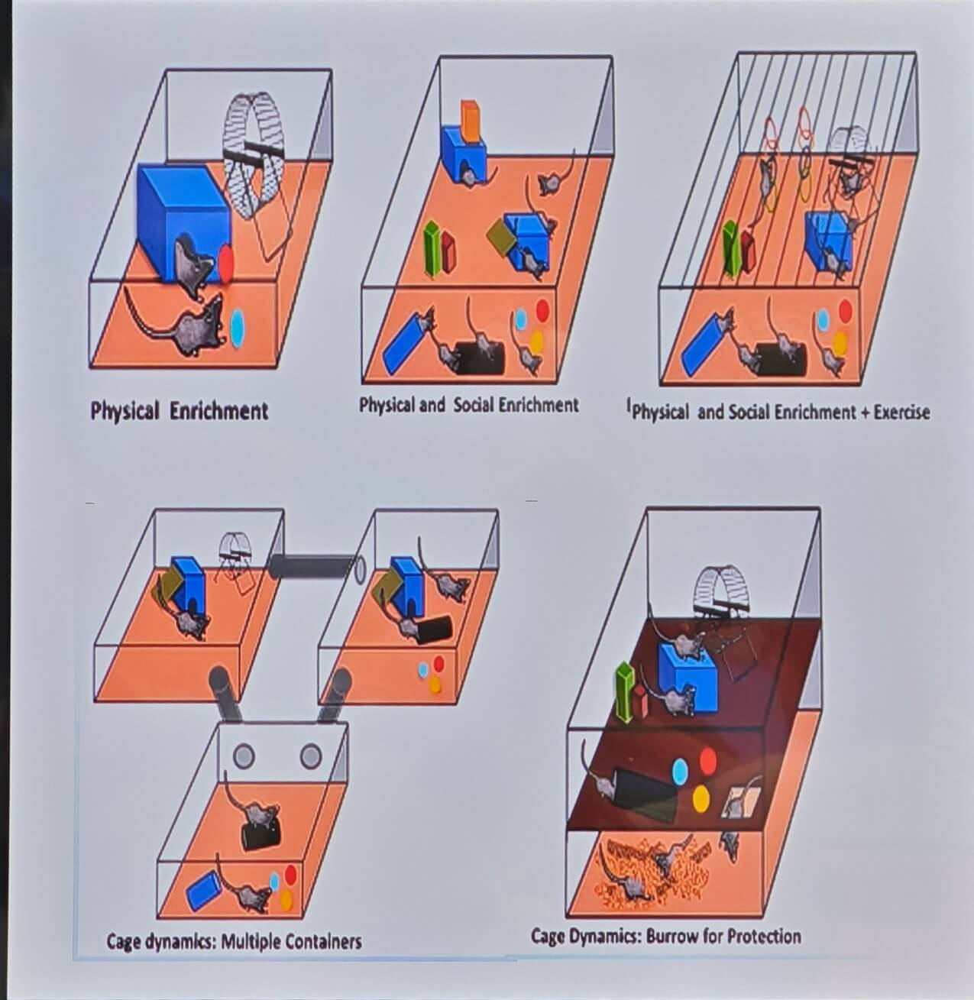
有。答案在另一个古希腊故事里:纳西索斯情结。纳西索斯美得惊人,却瞧不上所有追求者,最大乐趣是在水边欣赏自己的绝世容颜,最后落水而死,水边长出水仙花。这个"超级自恋狂"的故事指向一个关键变量:自尊(self-esteem),个体对自我的总体态度。
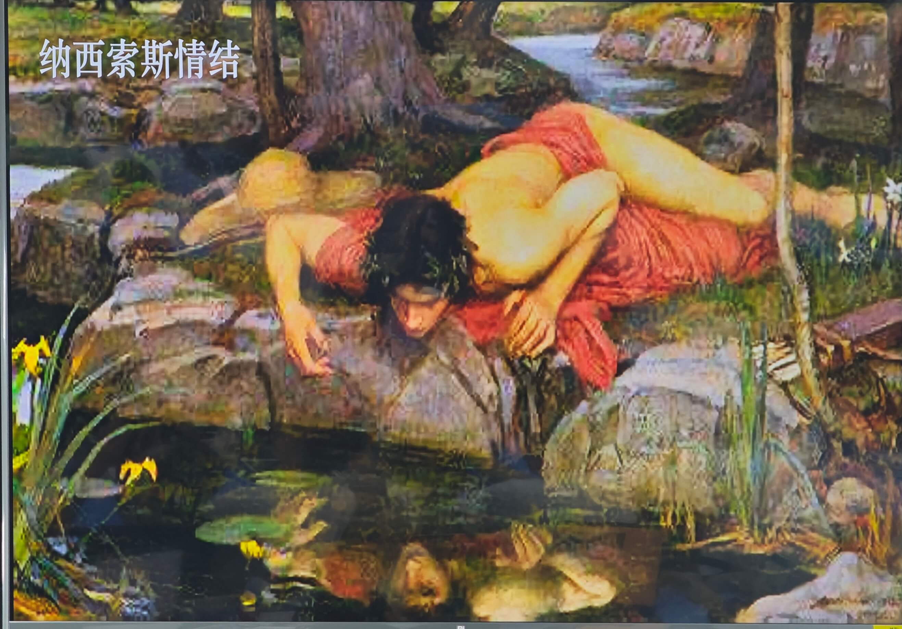
标准自尊量表只有四道题(1-7 分自评):你是否认为自己是有价值的人?是否拥有许多好的品质?是否对自己满意?是否对自己持肯定态度?
还是那批北师大学生,这次把贫穷和富裕两组各自再按自尊高低细分,结果非常惊人:
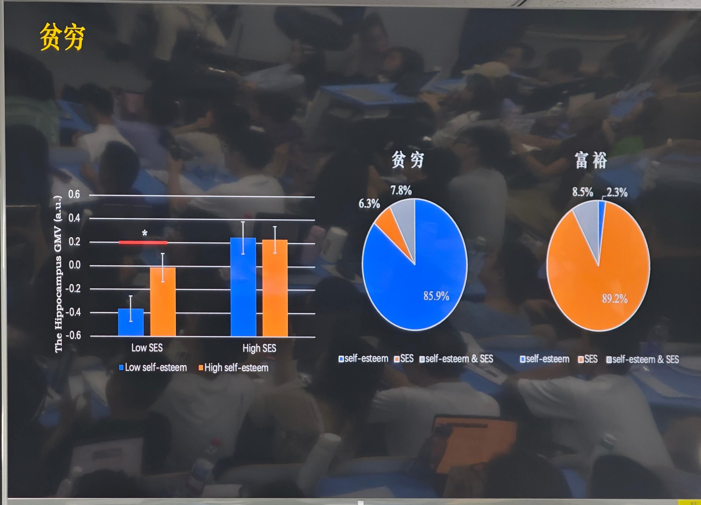
自尊在贫穷带来的压力源和心理世界之间,构建了一道牢不可摧的防线。我穷,这是事实;但我觉得我这人不错、有价值、对社会有贡献,认知就不会受到任何损伤。
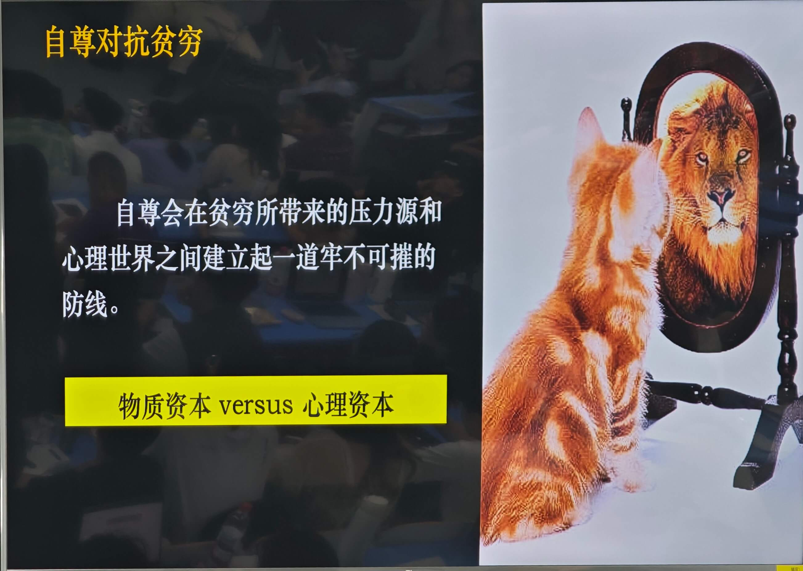
这是另一种资本。你们家有钱、有矿,那是物理资本;你觉得自己有价值,这是心理资本。心理资本比物理资本更有价值:物理资本会变,生意会破产;心理资本才能让你从低谷里跳出来,"我觉得我还是不错的。"
两个世界各自独立
总结:物理世界由原子构成,心理世界由故事构成;两者有关联,但彼此独立。
不要把物理世界里遭遇的不幸、打击和不开心,等同于你心里的感受。不是因为刚被打了一巴掌,就必须愤怒、必须哭泣。它取决于你怎么看待这件事,以及它在你的人生轨迹上形成了什么。
如果你上这门课觉得太挤、以后不想来了,没关系,把这句话记在心里就够了。
三次认知打击与 AI 的第四次冲击
人是万物的尺度
普罗泰戈拉说:人是万物的尺度。万事万物,没有人去度量,就没有任何意义,只是一片混沌。塞内卡进一步发挥:自然将我们置于宇宙的中心,使我们能用目光掠过整个宇宙;她不仅把人创造成直立的姿态,还把头颅安放在身体顶部、配一个能转的脖子,让人可以静观自身、追寻天际,随着旋转的天空改变面朝的方向。
山川为什么壮丽?如果没有人,华山就是一坨乱石头。宇宙因为人而具有意义。
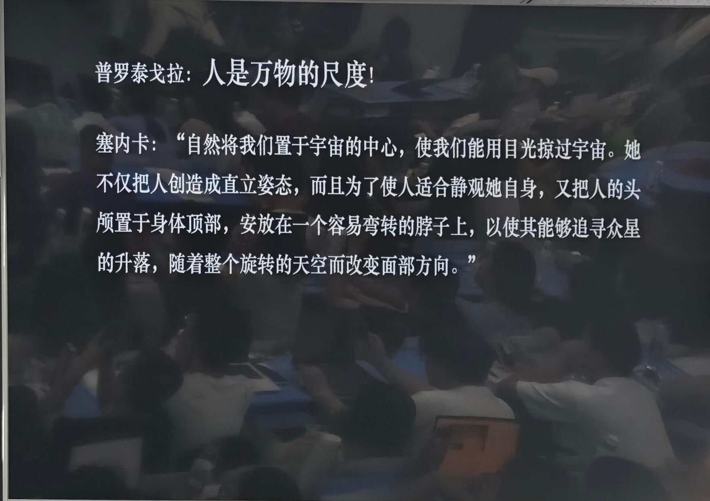
三次认知打击
不幸的是,人类历史上有三次"认知启蒙",说难听点,是三次对人类自尊心的暴击,把人从宇宙中心、生物中心、意识中心挨个赶了下来:
- 哥白尼:宇宙中心的丧失。地心说曾把地球放在宇宙中心;《天体运行论》说地球只是绕着太阳转。后来发现太阳系在银河系的边上,银河系又只是个很小的星系,人在宇宙的尺度上啥都不是。英文 revolution 一词"革命"的含义,正是从"旋转"来的。
- 达尔文:生物中心的丧失。《物种起源》说人是从低等生物进化来的,所有生物不论多卑微都是兄弟姐妹;人不是进化树的顶端,只是一个分叉。你高贵的身体,和猴子老鼠来自同一个地方。
- 弗洛伊德:意识中心的丧失。身体"脏"了,好歹灵魂高贵吧?弗洛伊德说:你的意识、你的理性只是幻觉,人被潜意识驱动,而潜意识里全是兽性,贪婪、邪恶、暴力。所谓高贵品质,只是用来掩盖兽性的外衣。
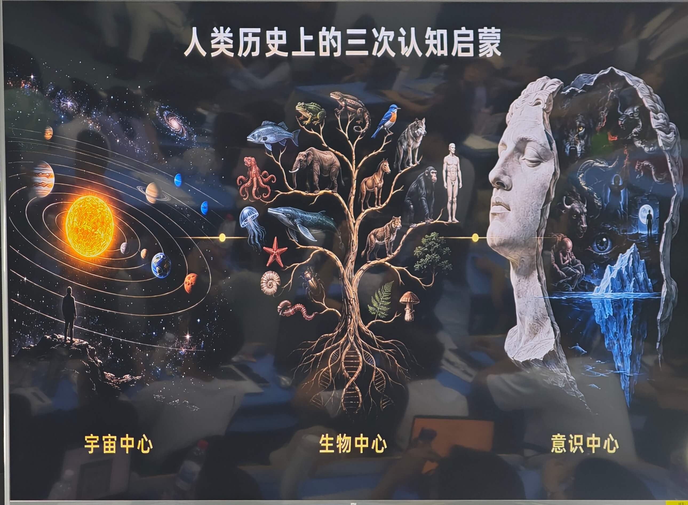
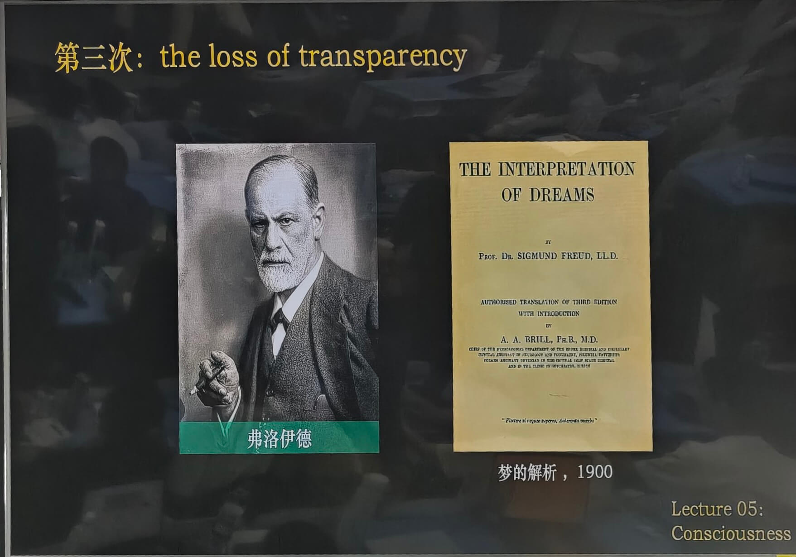
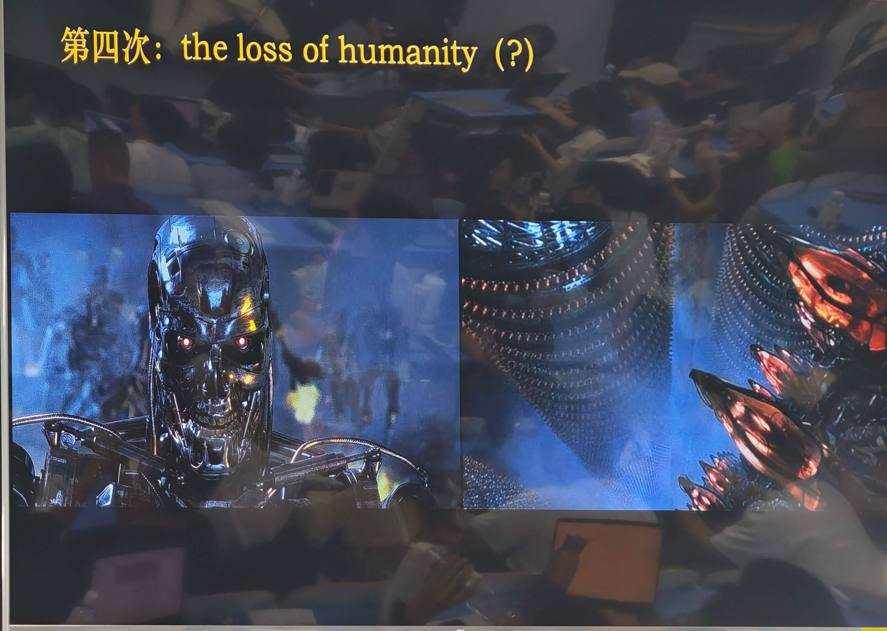
三次打击之后,人变成了卑微的个体:你再喊不出"山川因我而壮丽",只会说"我配吗?我就是一粒尘埃"。
第四次冲击:AGI 作为新物种
请记住 2022 年 11 月 30 日,ChatGPT 发布,一个全新物种开始诞生。它现在弱小,但潜力无限:
- 人的大脑被锁死了:860 亿神经元,占体重约 4%,却消耗 20-25% 的氧气和营养。再过一百万年,大脑也不会更大,心肺支撑不起更耗能的大脑。我们的算力被锁死了。
- AI 没有上限:一块硬盘不够就再加一块,一块 GPU 不够就再加一块,无限扩展。爱因斯坦是 outlier,总会死;AI 的权重存进任何介质,随时可以复活。
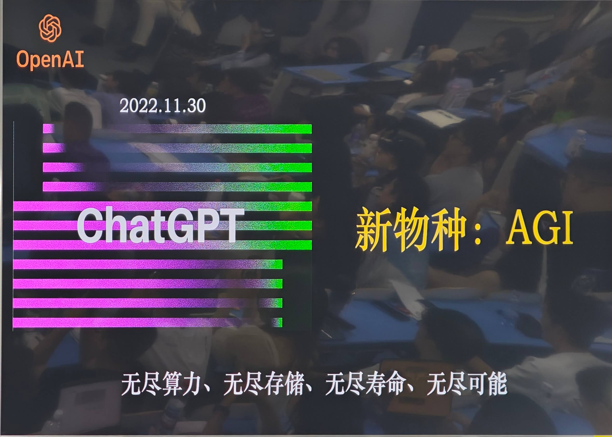
AI 带来的变化不同于以往任何发明。人类文明经历了三次革命:
| 革命 | 起点 | 增强的对象 |
|---|---|---|
| 工具革命 | 石矛石斧 → 蒸汽机 → 万吨水压机 | 肌肉 |
| 信息革命 | 楔形文字 → 活字印刷 → 电报电话互联网 | 感知 |
| AI 革命 | 2022-11-30,ChatGPT | 认知 |
前两次革命都是"增强人",AI 是增强认知,而认知恰恰是"人之所以为人"的东西。原来不会画画,AI 替你画;数学题不会做,AI 替你做。程序员已经开始大规模失业。AI 是全新的物种,正如 20 万年前智人取代其他人种。越聪明的物种越残忍:全世界的动物只有两种命运,成为我们的食物,或成为我们的宠物,没有第三种。
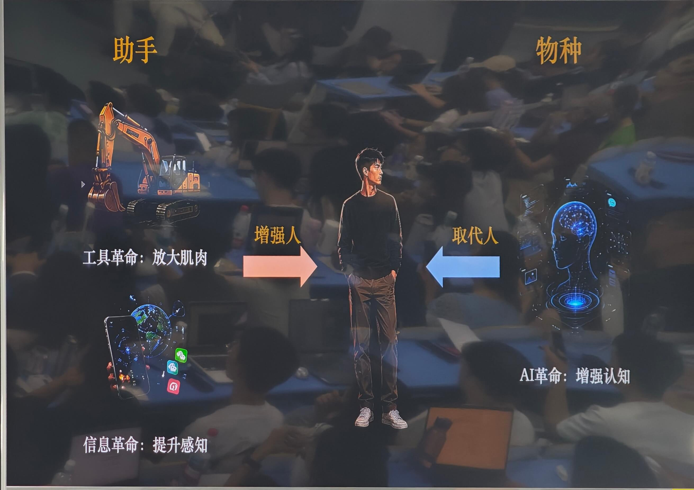
Hinton(人工神经网络之父)的一段话:
I think it's quite conceivable that humanity is just a passing phase in the evolution of intelligence. You couldn't directly evolve digital intelligence; it requires too much energy, too much careful fabrication. You need biological intelligence to evolve so that you can create digital intelligence. It may keep us around for a while to keep the power stations running. But after that, maybe not. We've figured out how to build beings that are immortal. So we've got immortality, but it's not for us.Geoffrey Hinton
按这个说法,人类来到世界上的唯一使命,就是把生物智能转化为数字智能;使命完成,人类就没有存在的必要了。
三大困境:一个比一个糟糕
AI 涌现后,人类面临三种可能的"人性之失":
- 物种的消亡:终结者式的人类灭绝。但这反而最不用担心,AI 没必要消灭人类,人类不值得被消灭。你修铁路时不会想着干掉全世界的蚂蚁,只会碾过挡路的那个蚂蚁窝;你踩死一只蚂蚁时,甚至意识不到自己踩死了它。爱的反义词不是仇恨,是无视。
- 主体性的丧失:AI 可以包办一切,把创造的财富分给每个人,大家不用工作也有钱。但你人存在的意义没了。为什么同一场雨,农民和旅人感受不同?因为他们在做事。如果所有人都躺在屋子里被养着,生命就成了一场空白。
- 叙事权的丧失:这是最糟糕的。现在我们已经习惯问 ChatGPT:我要去哪玩、该怎么做。AI 越来越强,可以为你的每一步找到最优解。但问题是:这个故事是谁的?不是你的故事,你只是算法的执行者。去大理玩三天,第一天玩什么、第二天玩什么全由 AI 规划,走完一圈,你还有自己的 personal story 吗?没有了。
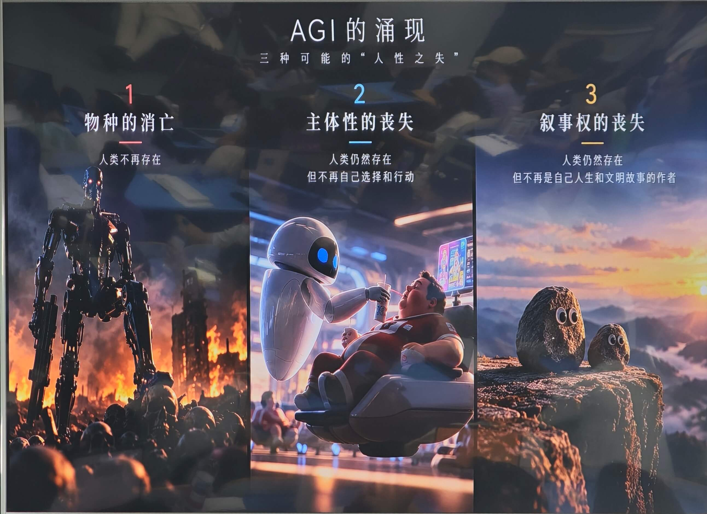
躬身入局
"所谓过往,皆为序章。"我们走过的所有路、经历的所有历史,只是序章。我们正在经历的是人类有史以来、甚至 35 亿年生命史以来最大的一次事件,每个人都是亲历者,躬身入局。
俄罗斯电影《绝杀慕尼黑》里有一句台词:当你活着的时候,你就可以做任何事情,你的一切还未注定,到此时此刻你还可以去争取。
我们的大脑约 3 磅(2.4-2.5 斤),是目前宇宙中最复杂的物体。人类的文明、科技、艺术、情感,以及摧毁这一切的暴力,所有爱恨情仇,都可以被这个 2.5 斤的肉球完全解释。宇宙本身宏伟却毫无意义,只是一堆没有目的、随机运动的石头。正因为"人是万物的尺度",正因为有这个肉球的计算、理解、分析与感受,才有了这个缤纷的世界。
脑科学是世界上最伟大的科学,没有之一。研究宇宙运转,与我何干?研究我自己,才是最密切的关系。
课程信息与考核
这门课要干什么
这门课的目标不是传授心理学知识,也不是讲人工智能知识。知识不重要,AI 讲得一定比我清楚、比我有耐心。这门课只有一个主题:
希望大家上完课后知道自己该往哪走:即使 AI 把我们当成蚂蚁,你也是一只有故事的蚂蚁。
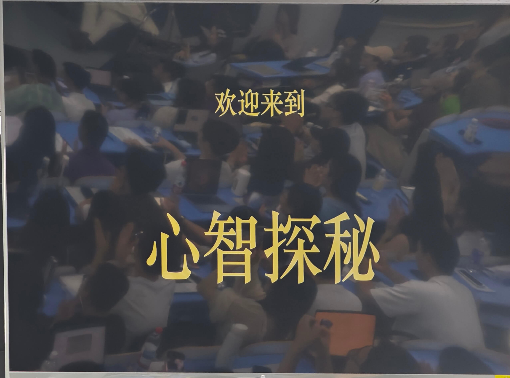
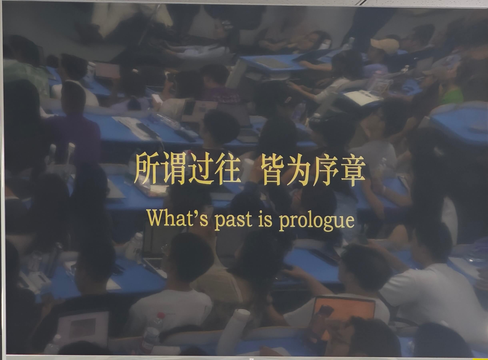
主讲人:导游资格证
这门课里,刘嘉把自己定位为带大家逛"心智"这座园子的导游。既然是导游,就得先亮证,他用两页 PPT 介绍了自己。
教育经历与工作经历:
- 本科/硕士:北京大学心理学系
- 博士:MIT 脑与认知科学系
- 中科院:百人计划/杰青
- 北师大:长江学者/万人计划
- 清华:基础科学讲席教授
导游的"业绩":
- 1-6 季《最强大脑》项目总设计
- 得到 App《心理学基础 30 讲》
- 《心理学通识》:心理学畅销榜 Top 10
- 《通用人工智能》:关于 AGI 的一切
他自己补充说:没有任何网红账号,也不做直播,因为线下才是最好的场所,大家可以交流。
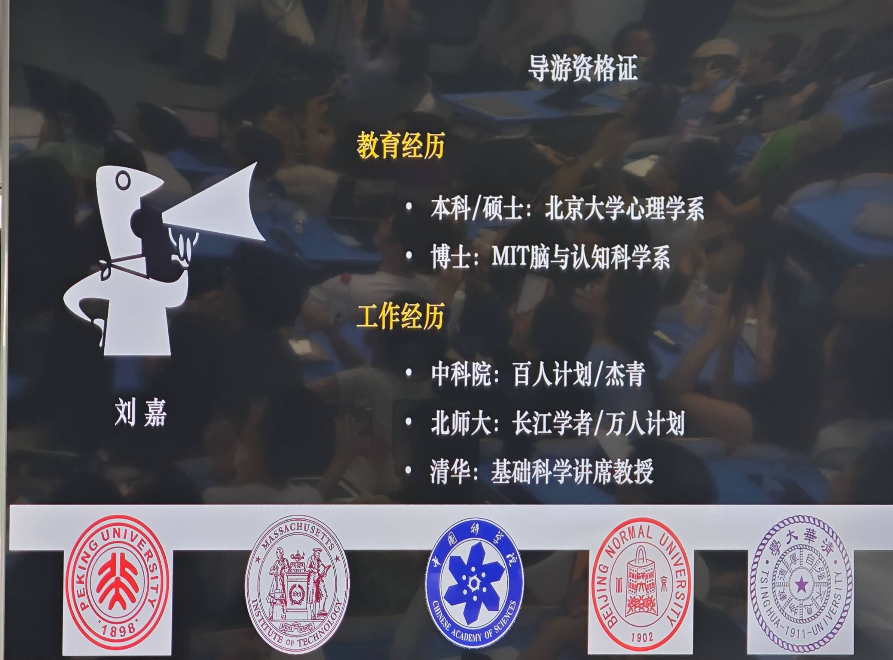
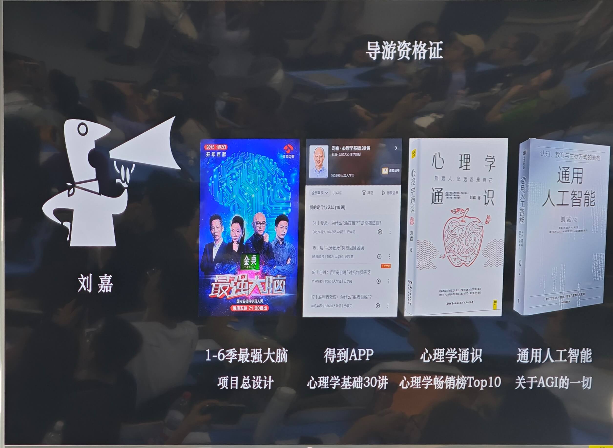
这门课有多火:220 人的教室来了近 500 人,人民日报专门报道《清华心理课为啥这么火?》;网上"清华顶流心理课"笔记动辄几十万赞,有人整理的课堂笔记三天涨粉 1500。
考核与要求
- 期末大论文:反驳本课上提出的观点。反驳得越狠,得分越高;如果说"老师你的观点太对了我反驳不了",那分数就低了。
- 期中作业:观看电影《飞越疯人院》(One Flew Over the Cuckoo's Nest, 1975, IMDB 8.8,奥斯卡最佳影片/导演/男主/女主/编剧),用课上讲的心理学、人类学、脑科学知识分析电影。
- 刻意练习:四位助教带领的批判性思维训练,这门课最有趣的部分,培养 AI 时代不可替代的思辨能力。
- 课堂规则:线下听课是最好的体验,不允许带笔记本电脑。一个人躺在床上拿手机听课,没有周围人的汗臭,就不是生活、不是烟火气。
推荐阅读
课堂时间轴
| 时间 | 内容 |
|---|---|
| 00:00 | 连体双胞胎案例;绳子行为艺术;叔本华豪猪困境与人际距离 |
| 00:08 | 分离手术的伦理与心理困境;幸福的定义 |
| 00:15 | 经验主义方法论:古希腊医学流派、可证伪性、可重复性 |
| 00:24 | 变化盲视实验与视错觉:眼见未必为实 |
| 00:50 | 心智三大基石;柏拉图洞穴寓言;空间是构建的幻觉 |
| 01:01 | 时间感知:抑郁(心在过去)与焦虑(心在未来);枯井蜜糖 |
| 01:11 | 因果构建:泛模式化、神的存在、因果压缩;两个世界与故事 |
| 01:42 | 皮格马利翁效应;贫穷损伤海马体;自尊的防线作用 |
| 01:58 | 三次认知打击(哥白尼、达尔文、弗洛伊德);AI 第四次冲击 |
| 02:20 | 课程总结:确立 AI 时代的个人叙事;课程要求 |